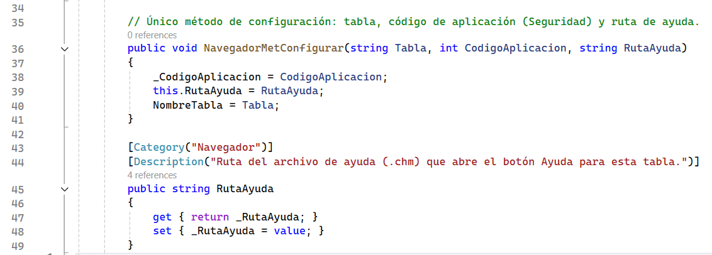

La configuración conecta un formulario específico con una tabla, sus permisos y su archivo de ayuda. El programador proporciona solamente estos tres valores; el resto del funcionamiento permanece dentro del componente.
Los tres parámetros
- Tabla: nombre exacto de la tabla administrada por el CRUD.
- Código de aplicación: número utilizado por Seguridad para consultar los permisos.
- Ruta de ayuda: ubicación del archivo CHM correspondiente al mantenimiento.
Ubicación del método de configuración
Capa Vista → Formularios → clase FrmNavegadorCrud

¿Cómo se configuran?
La llamada se coloca después de InitializeComponent(). Los valores deben pertenecer al mismo mantenimiento; por ejemplo, una tabla de empleados debe utilizar el código y la ayuda preparados para empleados.
- Escribir el nombre exacto de la tabla.
- Asignar el código entregado por el sistema de Seguridad.
- Indicar la ruta del CHM que se copiará junto con la aplicación.
Ubicación de la llamada de configuración
Proyecto de ejecución → carpeta Ejecucion_Navegador → clase Form1

Antes de tomar la captura, conviene corregir el ejemplo actual: utiliza la tabla
tblempleado, pero la ruta todavía señala tblaplicacion.chm.